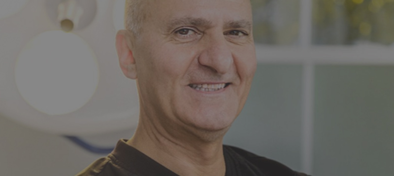

Meet Dr. Joseph Russo
One plastic surgeon, Dr. Joseph Russo, who runs his own practice in Newton, MA, supports the theory that the rise of social media has influenced the decision of many people to undergo cosmetic elective surgery and non-invasive cosmetic procedures. “I think now that there are platforms like Instagram and Facebook, it only makes sense that people would want more and more cosmetic procedures. People are constantly coming into the office and showing me pictures of celebrities and influencers, and that is a direct result of social media,” Dr. Russo said.